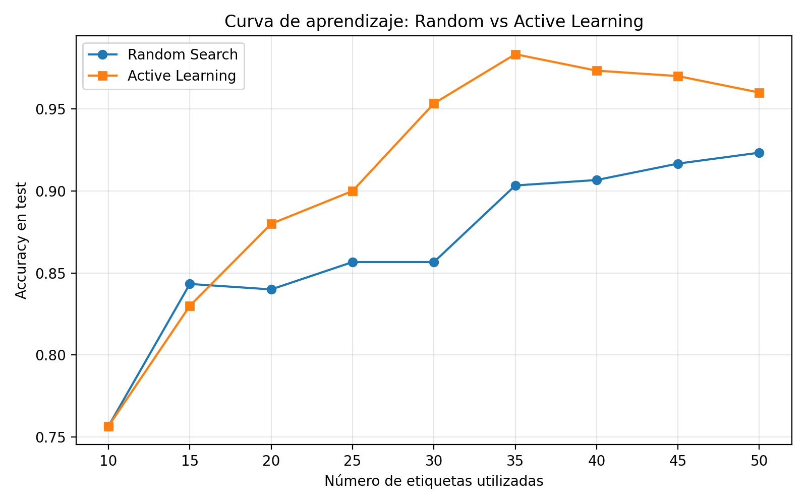

Práctica 8: Active Learning (Aprendizaje Activo)
Introducción al Aprendizaje Automático
3º Ingeniería Informática - Curso 2025/2026
Objetivo
Comprender cómo un modelo puede aprender de forma más eficiente cuando no se etiquetan ejemplos al azar, sino que se seleccionan de manera inteligente aquellos datos que resultan más informativos. En particular, se estudiará el enfoque de Active Learning o Aprendizaje Activo, comparando una estrategia de etiquetado aleatorio frente a una estrategia basada en la incertidumbre del modelo. El objetivo final será analizar cómo maximizar el rendimiento de un clasificador cuando el número de etiquetas disponibles es limitado.
Material de partida
- Un código base que prepara automáticamente un dataset sintético de clasificación binaria mediante
make_moons. - Un conjunto inicial de 10 puntos etiquetados.
- Un conjunto amplio de puntos no etiquetados, denominado pool.
- Un conjunto de test separado para evaluar el rendimiento del modelo.
- El vector de etiquetas reales, que actuará como oráculo durante el proceso de consulta.
- Una plantilla con las librerías necesarias para entrenar modelos, calcular probabilidades y representar gráficas.
Introducción
En muchos problemas reales de aprendizaje automático, disponer de datos no suele ser el principal problema. Lo difícil, costoso o lento suele ser conseguir datos correctamente etiquetados. Por ejemplo, puede ser relativamente fácil recopilar miles de imágenes, señales o registros, pero etiquetarlos puede requerir la intervención de expertos.
En esta práctica simularemos este escenario con un dataset sintético. Aunque conocemos todas las etiquetas verdaderas, el modelo solo podrá acceder inicialmente a 10 etiquetas. El resto estarán ocultas para el modelo y únicamente se revelarán cuando el algoritmo decida consultar esos puntos.
Una estrategia sencilla sería seleccionar nuevos ejemplos al azar. Sin embargo, esta selección puede ser poco eficiente, ya que algunos ejemplos pueden ser redundantes, muy fáciles o poco informativos. El Active Learning propone una idea diferente: dejar que el modelo indique qué ejemplos le resultan más útiles para aprender. Para ello, se seleccionan aquellos puntos sobre los que el modelo tiene mayor incertidumbre.
En esta práctica vas a comparar dos estrategias:
- una estrategia aleatoria, que selecciona nuevos ejemplos sin tener en cuenta el estado del modelo;
- una estrategia de aprendizaje activo por incertidumbre, que selecciona los ejemplos cuya predicción está más cerca de la duda.
La pregunta clave será: ¿Es mejor gastar el presupuesto de etiquetas al azar o usarlo en los ejemplos que más pueden ayudar al modelo?
Tarea 1: Entrenamiento inicial
Qué se hizo
- Se cargó un dataset inicial con 10 etiquetas.
- Se entrenó el modelo de clasificación base RandomForest con los parámetros
n_estimators=100yrandom_state=42usando únicamente las 10 etiquetas iniciales. - Se evaluó el modelo en el conjunto de test calculando el accuracy inicial.
- Se implementó la función
select_random, que selecciona índices aleatorios del pool no etiquetado para la estrategia de referencia. - Se implementó la función
select_uncertainty, la cuál calcula las probabilidades predichas por el modelo sobre el pool no etiquetado, identifica los puntos más cercanos a 0.5 (máxima incertidumbre) y devuelve sus índices. - Se ejecutó el ciclo de consulta por cada iteración hasta alcanzar 50 etiquetas totales, reentrenando el modelo en cada paso y evaluando su rendimiento.
Resultados
- Accuracy inicial: 0.7567
- Número de etiquetas usadas: 10
- Observaciones: El modelo funciona bastante bien para tener tan pocos datos, pero todavía comete bastantes errores. Se necesitan más ejemplos para que el modelo sea más preciso.
Cuestión: ¿Te parece fiable el rendimiento inicial?
No demasiado. Aunque el resultado no está mal, el modelo solo ha aprendido con 10 ejemplos y eso es muy poco. Puede pasar que justo esos ejemplos no representen bien todos los casos posibles.
El modelo seguramente ha aprendido algunas cosas básicas, pero todavía no conoce muchas situaciones diferentes. Por eso el resultado puede cambiar bastante dependiendo de qué ejemplos se hayan escogido al principio.
También es posible que haya zonas donde el modelo realmente no sepa qué hacer porque nunca ha visto ejemplos parecidos.
Análisis de limitaciones
- Hay muy poca información para aprender.
- El modelo no ha visto suficientes casos diferentes.
- Puede equivocarse fácilmente en ejemplos nuevos.
- Los resultados dependen mucho de los ejemplos iniciales.
- El modelo todavía no entiende bien el problema completo.
- Hace falta añadir más datos para que aprenda mejor y sea más fiable.
Tarea 2: Estrategia baseline con selección aleatoria
Qué se hizo
- Se implementó una función de selección aleatoria (
select_random) que eligeBATCH_SIZEíndices sin reemplazo del pool no etiquetado. - Se ejecutó el ciclo de consulta hasta alcanzar 50 etiquetas totales (partiendo de 10 iniciales), reentrenando un RandomForest en cada iteración.
- En cada paso, se evaluó el modelo en el conjunto de test y se registró el accuracy obtenido.
- Se guardó la evolución del número de etiquetas y los accuracies para representar la curva de aprendizaje y comparar con la estrategia por incertidumbre.
Tabla de evolución
| Número de etiquetas | Accuracy | Descripción |
|---|---|---|
| 10 | 0.7567 | Estado inicial |
| 15 | 0.8433 | Después de la 1ª consulta aleatoria |
| 20 | 0.8400 | Después de la 2ª consulta |
| 25 | 0.8567 | Continúa |
| 30 | 0.8567 | Continúa |
| 35 | 0.9033 | Continúa |
| 40 | 0.9067 | Continúa |
| 45 | 0.9167 | Continúa |
| 50 | 0.9533 | Estado final |
Cuestión: ¿Por qué constituye una línea base razonable?
La selección aleatoria se trata de una línea base razonable al ser independiente del modelo, ya que permite observar qué rendimiento se obtiene simplemente al aumentar el número de etiquetas sin aplicar ningún criterio inteligente de selección.
De este modo, sirve como referencia para comparar el comportamiento de la estrategia activa y comprobar si realmente aporta una mejora frente a un muestreo no guiado.
Como la estrategia activa supera claramente a la aleatoria, entonces queda demostrado que elegir ejemplos informativos es más eficiente que etiquetar al azar.
Tarea 3: Ciclo de consulta mediante incertidumbre
Qué se hizo
- Se implementó la estrategia de selección por incertidumbre del modelo.
- Se calcularon las probabilidades predichas sobre el pool no etiquetado.
- Se identificaron los ejemplos más cercanos a 0.5, que son los de mayor incertidumbre.
- Se consultaron esos puntos al oráculo y se añadieron al conjunto de entrenamiento.
- Se repitió el proceso hasta alcanzar 50 etiquetas totales, reentrenando y evaluando el modelo en cada iteración.
Tabla de evolución
| Número de etiquetas | Accuracy | Descripción |
|---|---|---|
| 10 | 0.7567 | Estado inicial |
| 15 | 0.8300 | Después de la 1ª consulta por incertidumbre |
| 20 | 0.8800 | Después de la 2ª consulta |
| 25 | 0.9000 | Continúa |
| 30 | 0.9533 | Continúa |
| 35 | 0.9833 | Continúa |
| 40 | 0.9733 | Continúa |
| 45 | 0.9700 | Continúa |
| 50 | 0.9600 | Estado final |
Cuestión: ¿Por qué tiene sentido seleccionar puntos cercanos a la frontera?
Tiene sentido seleccionar los puntos donde el modelo tiene más dudas porque son los ejemplos que más información pueden aportar al aprendizaje.
Cuando una probabilidad está cerca de 0.5 significa que el modelo no sabe claramente a qué clase pertenece ese ejemplo. Esos puntos suelen estar cerca de la frontera entre clases, que es precisamente la zona más difícil de aprender.
Si se eligieran ejemplos al azar, muchos podrían ser casos fáciles que el modelo ya sabe clasificar bien. En esos casos, añadir más ejemplos no ayuda demasiado a mejorar.
En cambio, los ejemplos dudosos obligan al modelo a corregir y ajustar mejor la frontera de decisión. Gracias a eso, el modelo aprende más rápido y consigue mejores resultados utilizando menos etiquetas.
Tarea 4: Comparativa final mediante curva de aprendizaje
Qué se hizo
- Se representó en una gráfica la evolución del accuracy a medida que aumentaba el número de etiquetas disponibles.
- Se incluyeron ambas curvas de aprendizaje, una para la selección aleatoria y otra para la selección por incertidumbre.
- Se comparó visualmente el comportamiento de ambas estrategias para analizar cuál aprende más rápido y cuál aprovecha mejor cada nueva etiqueta.
Figura generada

Curva comparativa entre selección aleatoria y aprendizaje activo por incertidumbre.
Cuestión: ¿Qué estrategia obtiene mejor rendimiento con el mismo número de etiquetas?
La estrategia basada en incertidumbre obtiene mejores resultados utilizando el mismo número de etiquetas.
Observando la gráfica completa, puede verse que el aprendizaje activo mejora mucho más rápido durante las primeras iteraciones. Con pocas etiquetas adicionales ya consigue accuracies muy altos, mientras que la selección aleatoria necesita más ejemplos para alcanzar resultados similares.
Por ejemplo, la estrategia por incertidumbre supera el 90% de accuracy utilizando aproximadamente 25 etiquetas, mientras que la selección aleatoria tarda bastante más en llegar a ese nivel.
También se observa que ambas estrategias presentan pequeñas oscilaciones. Esto es normal, ya que al añadir nuevos ejemplos la frontera de decisión cambia y el rendimiento puede subir o bajar ligeramente en algunas iteraciones.
Aunque al final ambas estrategias consiguen buenos resultados, la selección por incertidumbre aprovecha mejor las primeras consultas y aprende de forma más eficiente.
Interpretación
Las diferencias entre ambas estrategias son bastante claras, especialmente al principio del proceso.
La selección por incertidumbre consigue mejoras más rápidas porque el modelo elige ejemplos donde tiene más dudas, es decir, los casos más útiles para aprender. Gracias a eso, el clasificador ajusta antes la frontera entre clases.
La estrategia aleatoria también mejora progresivamente, pero lo hace de forma más lenta porque algunos ejemplos seleccionados aportan poca información nueva.
En algunos puntos concretos las diferencias se reducen e incluso puede haber pequeñas oscilaciones donde la estrategia aleatoria obtiene resultados parecidos o ligeramente mejores en una iteración concreta. Sin embargo, la tendencia general muestra que el aprendizaje activo basado en incertidumbre utiliza las etiquetas de forma más eficiente y consigue mejores accuracies con menos ejemplos etiquetados.
Además, si ambas estrategias siguieran recibiendo cada vez más etiquetas, las diferencias terminarían reduciéndose. Cuando el número de ejemplos etiquetados tiende a ser muy grande, ambos métodos acabarían disponiendo prácticamente de toda la información del problema, por lo que sus resultados tenderían a parecerse mucho.
La principal ventaja del aprendizaje activo no es necesariamente conseguir un accuracy final muchísimo mayor, sino alcanzar buenos resultados utilizando menos etiquetas y menos esfuerzo de etiquetado.
Tarea 5: Reflexión sobre la frontera de decisión
Pregunta de reflexión: ¿Por qué el modelo aprende más rápido cuando elige puntos cercanos a la frontera?
El modelo aprende más rápido porque los puntos cercanos a la frontera de decisión son justamente los que más dudas le generan. Son ejemplos difíciles de clasificar, ya que el modelo no tiene claro a qué clase pertenecen y suele asignar probabilidades cercanas a 0.5.
Cuando se obtiene la etiqueta real de esos puntos, el modelo recibe información muy útil para corregir y ajustar mejor la separación entre clases. Es decir, aprende justo en las zonas donde más se equivoca o donde tiene más incertidumbre.
En cambio, los puntos muy alejados de la frontera suelen ser ejemplos “fáciles”. El modelo ya está bastante seguro de cómo clasificarlos, por lo que añadir sus etiquetas normalmente aporta poca información nueva. Aunque ayudan un poco, no mejoran tanto el aprendizaje como los ejemplos dudosos.
Por eso la estrategia basada en incertidumbre aprovecha mejor el presupuesto limitado de etiquetas. En vez de gastar etiquetas en ejemplos fáciles o repetitivos, se centra en los casos más útiles para mejorar el modelo rápidamente. Esto explica por qué en los resultados obtenidos el método de incertidumbre alcanza accuracies altas antes que la selección aleatoria.
Además, aunque ambas estrategias pueden terminar obteniendo resultados parecidos si se añaden muchísimas etiquetas, la estrategia activa consigue aprender mejor utilizando menos ejemplos, lo que la hace más eficiente.
Análisis crítico: Limitaciones de la estrategia
Esta estrategia también tiene algunas limitaciones. Una de las más importantes es que depende mucho del modelo inicial. Si el modelo empieza muy mal entrenado con los primeros 10 ejemplos, puede calcular mal qué puntos son realmente inciertos y acabar seleccionando ejemplos poco útiles.
También hay que tener en cuenta que la incertidumbre estimada por el modelo no siempre es totalmente fiable. A veces el modelo puede sentirse “seguro” aunque esté equivocado, o al contrario, tener dudas en zonas que realmente no son importantes.
Otro problema es que elegir siempre los puntos más inciertos puede hacer que los ejemplos seleccionados sean demasiado parecidos entre sí. Eso puede provocar que algunas regiones del espacio queden poco representadas y el modelo no llegue a aprender bien ciertos casos.
Además, si solo se consultan puntos cercanos a la frontera, pueden ignorarse ejemplos alejados que también podrían ser útiles para entender mejor la distribución general de los datos.
Por tanto, aunque la estrategia por incertidumbre suele funcionar mejor y aprender más rápido, no es perfecta y su rendimiento depende bastante de cómo empiece el modelo y de la calidad de los datos seleccionados.
Reto: Pensando en un problema real
Imagina ahora que cada etiqueta tiene un coste económico. Por ejemplo, cada dato debe ser revisado por una persona experta y solo puedes pagar un número muy reducido de anotaciones.
Cuestiones
-
¿Qué estrategia elegirías?
Elegiría una estrategia de aprendizaje activo basada en incertidumbre, ya que permite aprovechar mejor cada etiqueta disponible. Además, en lugar de gastar el presupuesto en ejemplos elegidos al azar, el modelo consulta los puntos sobre los que tiene más dudas y, por tanto, los que más pueden ayudarle a mejorar.
-
¿Qué ventajas tendría respecto a etiquetar ejemplos al azar?
La principal ventaja es la eficiencia, ya que con las mismas etiquetas, Active Learning suele alcanzar mejores resultados porque selecciona ejemplos más informativos. Esto hace que el modelo aprenda antes la frontera de decisión y mejore más rápido que con muestreo aleatorio.
-
¿Qué riesgos o limitaciones podría tener?
El principal riesgo es que el modelo inicial no sea lo suficientemente bueno, lo que podría llevar a seleccionar ejemplos poco útiles o incluso perjudiciales para el aprendizaje. Además, al centrarse solo en los puntos más inciertos, podría acabar seleccionando ejemplos muy similares entre sí, lo que podría limitar la diversidad de los datos y hacer que el modelo no aprenda bien ciertas regiones del espacio.
-
¿Qué ocurriría si el modelo inicial estuviera muy mal entrenado?
Si el modelo inicial fuese muy malo, la incertidumbre que calcule también podría ser poco fiable. En este caso, podría seleccionar ejemplos que realmente no sean muy útiles y el proceso de aprendizaje activo perdería eficacia. Por todo ello, es importante partir de una base mínima razonable.
-
¿Puede Active Learning seleccionar ejemplos poco representativos si solo se centra en la incertidumbre?
Sí, podría ocurrir, porque aunque los puntos más inciertos suelen estar cerca de la frontera, esto no garantiza que representen bien toda la distribución de datos. Si solo se eligieran estos casos, el modelo podría aprender muy bien la frontera local pero seguir sin ver ejemplos variados del resto del problema.
Interpretación
Conclusión
En esta práctica se ha visto que no basta con tener muchos datos, sino que también importa elegir bien cuáles etiquetar. El Active Learning aprende más rápido porque selecciona los ejemplos donde el modelo tiene más dudas, mientras que la selección aleatoria puede desperdiciar etiquetas en casos fáciles o poco útiles.
Además, esta estrategia puede ahorrar bastante tiempo y coste de etiquetado en problemas reales, sobre todo cuando etiquetar datos es caro o requiere expertos.
Aun así, no es una técnica perfecta. Si el modelo inicial es malo, puede elegir ejemplos poco útiles, y si solo se centra en los puntos más inciertos, algunas zonas de los datos pueden quedar mal representadas.
En general, Active Learning merece la pena cuando hay muchos datos sin etiquetar y pocas etiquetas disponibles, ya que permite conseguir buenos resultados usando menos ejemplos.